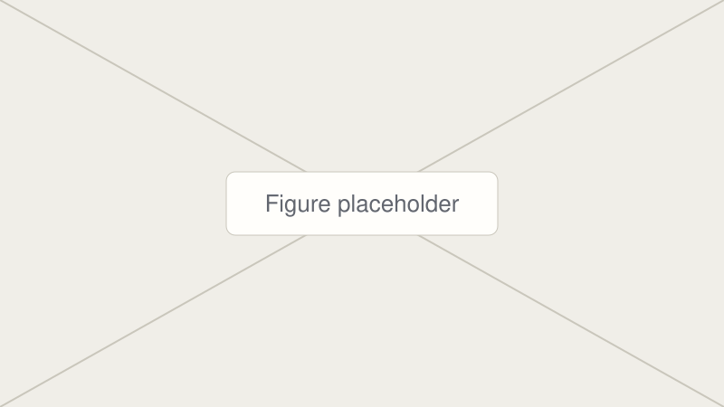

1Institution One2Institution Two
†Equal contribution.
Contact: author@example.com
01 · Overview
Lead paragraph introducing the section. Use bold for key terms.
One or two sentences describing this mode.
00.0% headline metricOne or two sentences describing this mode.
00.0% headline metricOne or two sentences describing this mode.
00.0% headline metricOne-line note under the diagram.
02 · Method
Lead paragraph.

Text that sits beside the figure.
Description of the issue.
Description of the issue.
03 · Walkthrough
04 · Results
Describe the evaluation setup.
| System | Metric A | Metric B | Metric C |
|---|---|---|---|
| Baselines | |||
| Baseline one | 00.0 | 00.0 | 00.0 |
| Baseline two | 00.0 | 00.0 | 00.0 |
| Proposed (ours) | |||
| Ours | 00.0 | 00.0 | 00.0 |
Table caption. Bold = best, underline = second best.
Ablation
05 · Chart
Describe what the chart measures.
Hover a point for details.
06 · Cite
If you find this work useful, please cite the paper.
@article{author2026project,
title = {{Project}: Paper Title Goes Here},
author = {Author, First and Author, Second},
journal = {arXiv preprint arXiv:XXXX.XXXXX},
year = {2026}
}